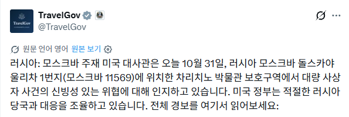
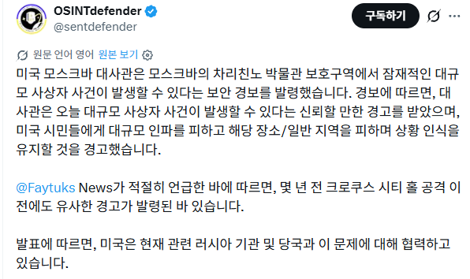
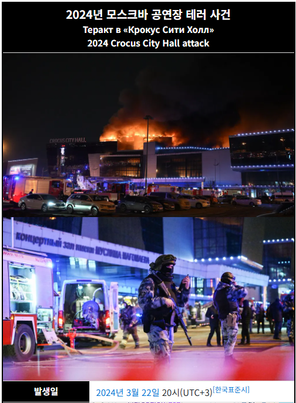
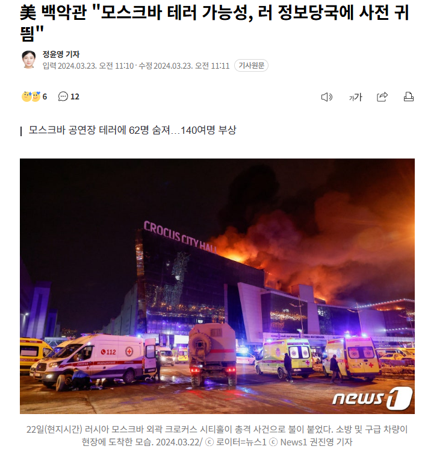

미국이 러시아에서 테러가 발생할 거 같다고 예고함
이게 무슨 근들갑임? 할 수도 있지만


2년 전에 미국이 사전에 경고했지만 러시아가 무시하고 보름도 안 지나서 테러가 발생해 700명이 넘는 사상자가 발생했었음


미국이 러시아에서 테러가 발생할 거 같다고 예고함
이게 무슨 근들갑임? 할 수도 있지만


2년 전에 미국이 사전에 경고했지만 러시아가 무시하고 보름도 안 지나서 테러가 발생해 700명이 넘는 사상자가 발생했었음
저거 알려주는 게 자국민(미국인) 보호하려고 알려주는건가?? 이거면 시발 존나 멋진데;
러시아 거주 외국인도 있고 저런 테러가 성공하면 극단주의 성향을 가진 협력자나 조력자가 증가하거나 테러조직끼리 경쟁하기 위해 또 다른 테러를 발생시킬수있다고 했었음
미국:우리가할꺼임ㅋ
미국이랑 러시아가 사이가 안좋다고 하더라도 테러는 완전 별개로 보는건가 미국이 먼저 경고를 해주네
-준비됐지?
-예
-미리 알려줬지?
-예
-ㅇㅋ 우린줄은 모를거야
리멤버 , 노 러시안